Pearl has been with us since she was found in the ocean with an incurable lung disease that only permits her to do tricks like these very rarely. Pearl will definetly be staying with us for life.
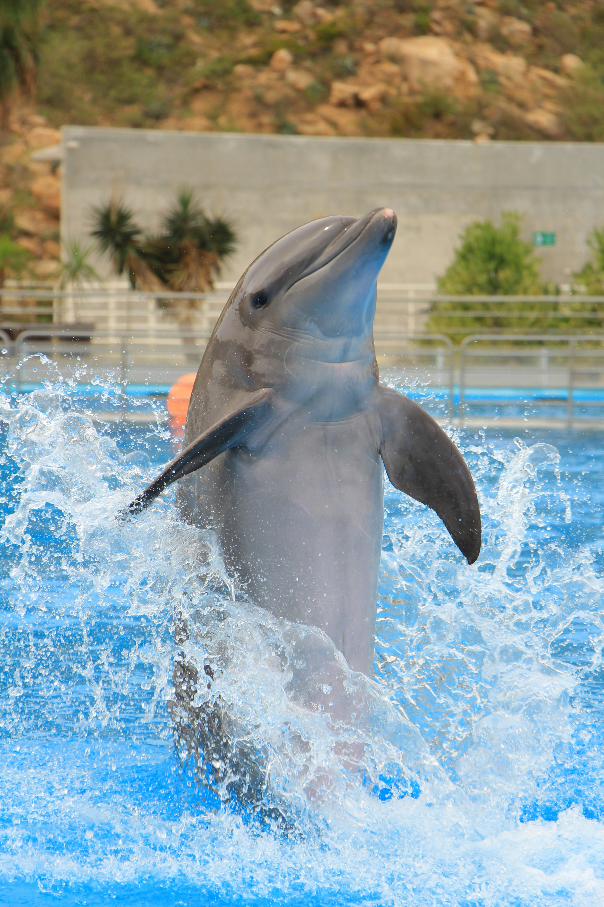
Riptide here was also found un the ocean with a sharp piece of plastic dug into his lower body. He has been staying with us for 6 months and will be returning very soon!
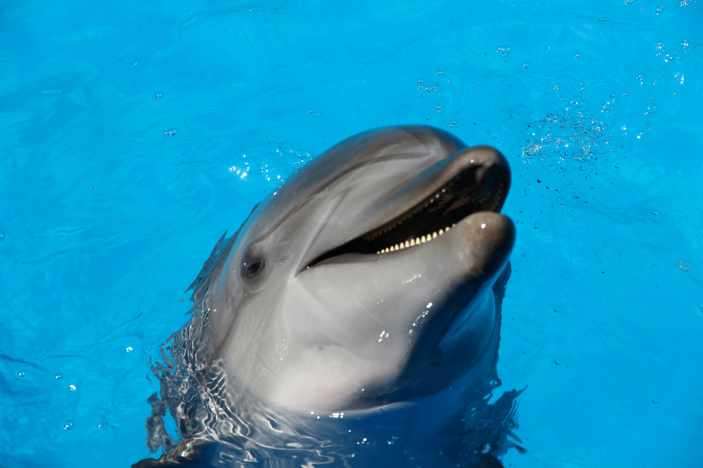
Bubbles washed up on a beach one day with his right fin was almost completely torn off. After a lot of hard work and prayers, you can see that his right fin is almost completely healed, so he will we released soon.
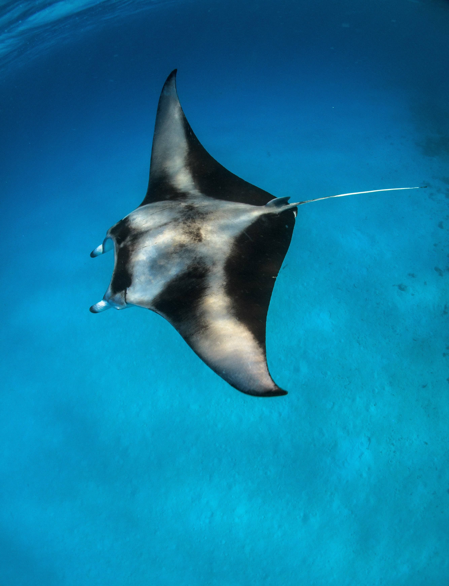
Triton was found on the shore with a plastic wrap around his head that didn't allow him to breathe. While he is not fully healed, he is making progress and will be returning to the ocean in 1-2 years.
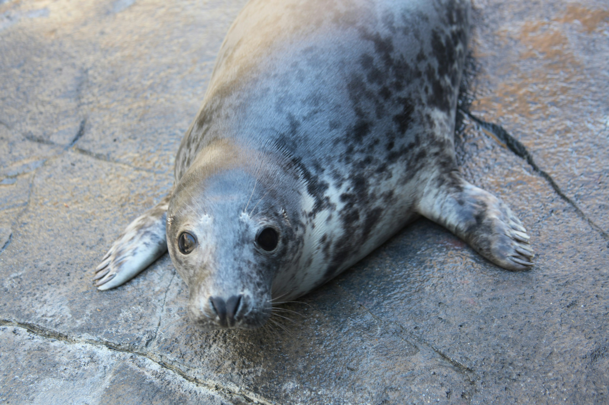
Say hello to Milo! As you can see from this picture, he is known for being the friendliest seal alive. Unfortunatly, Milo cannot move due to a disease. Slowly but surely, though, he has been able to move more and more and we think he will be able to return to the ocean in 5-7 years.
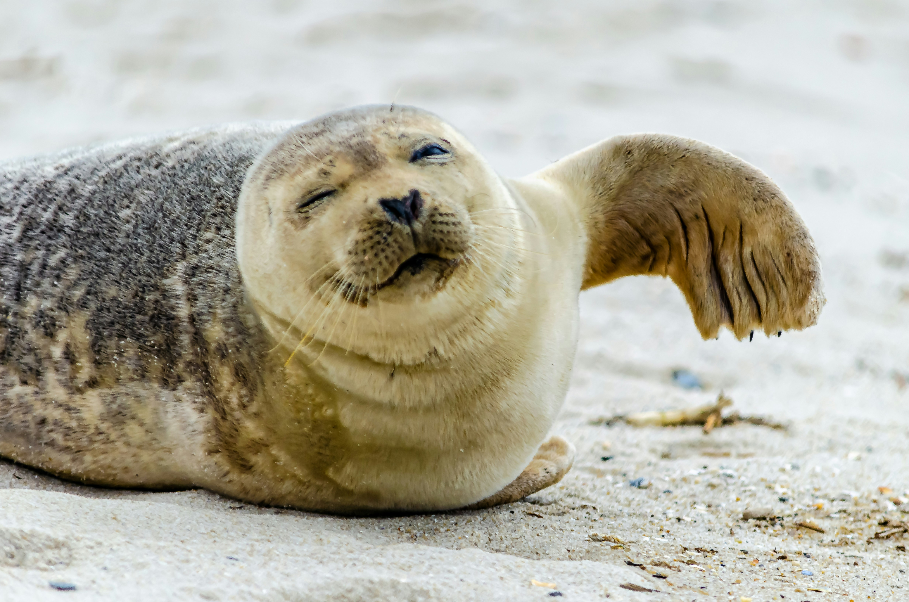
Neptune is our only whale. He was found when he was a baby in the ocean with infected scars on his tail, likely from a fishing accident. We gave him a prothsthetic tail, but he will be staying with us for life.
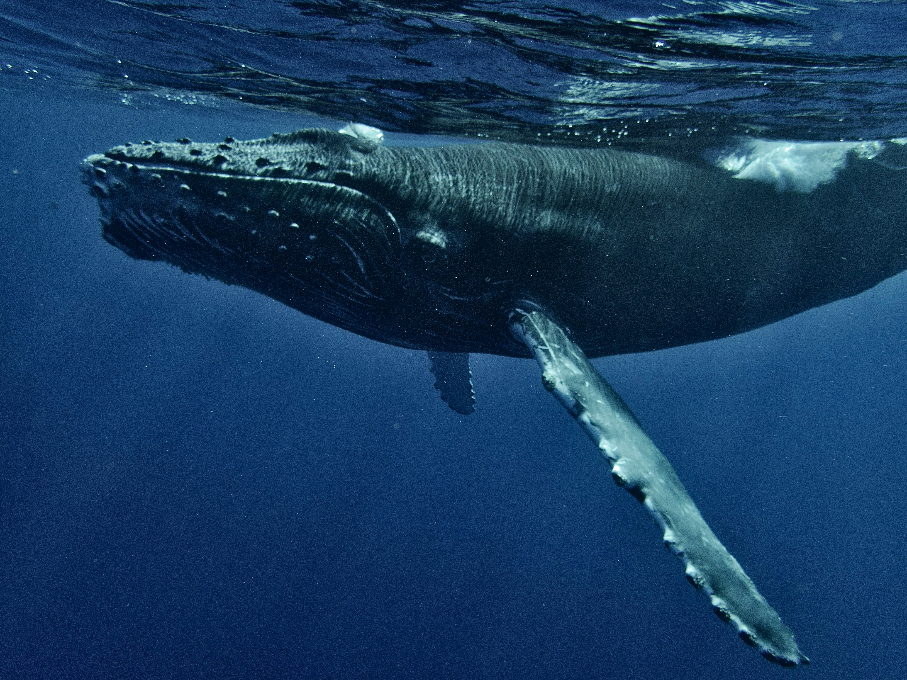
Moana was born here when two turtles mated. She is perfectly healthy but refused to set foot in the ocean, so she will be staying with us.
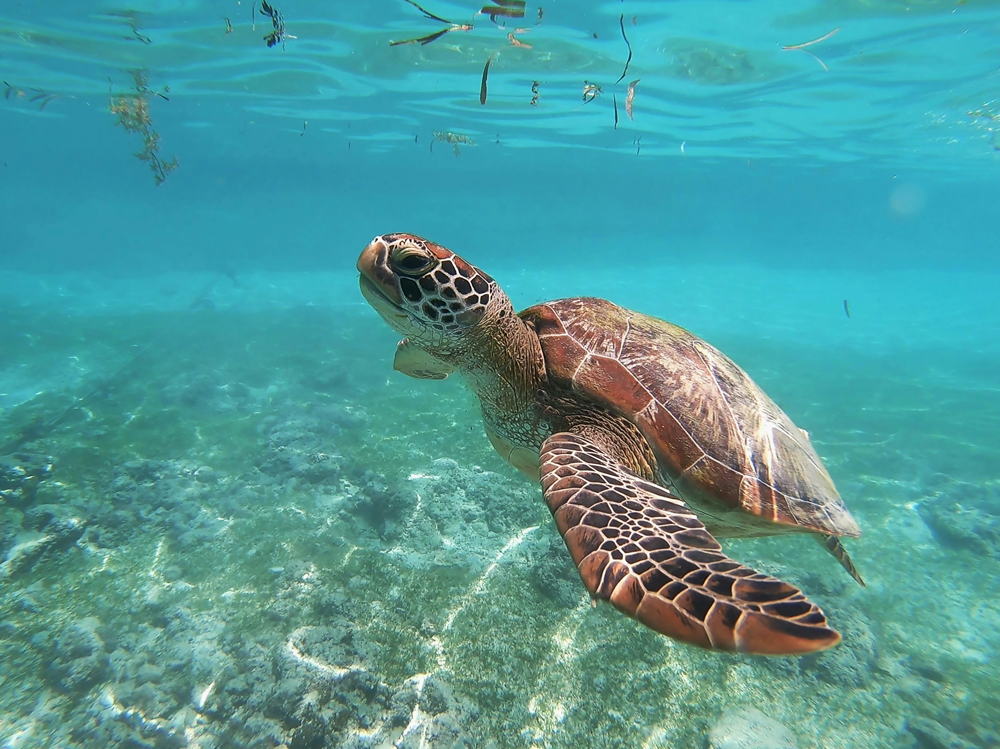
Tide was born with his left fin longer than his right one. This unfortunatly makes it very hard for him to swim, so we decided it would be better for his health to stay here.
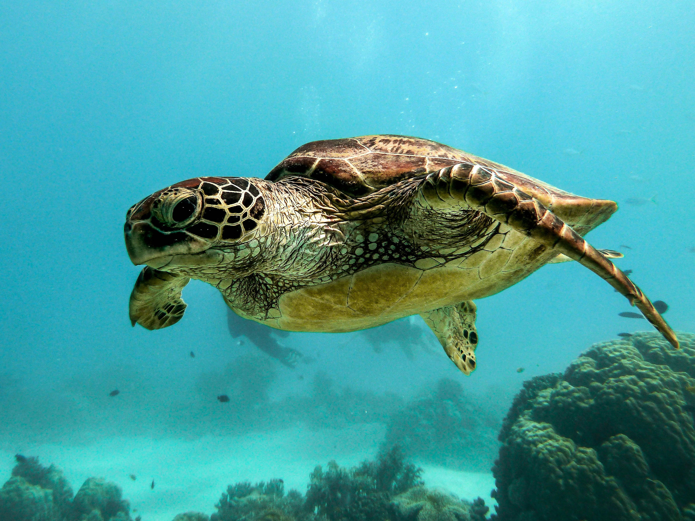
Reef is our third turtle. He is much smaller than a normal sized turtle and also much weaker, which makes him inable to return to the wild. He lives with us.
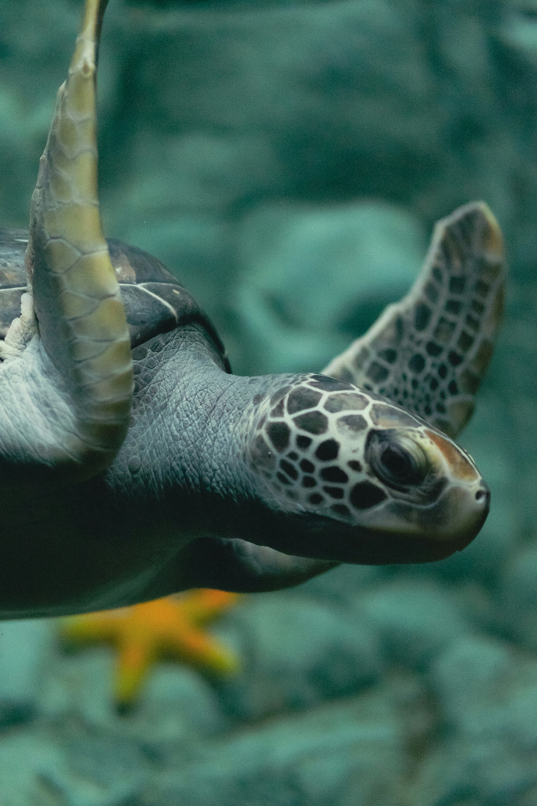
Pebble was born here and is healthy. She is fairly young so we plan to return her very soon.
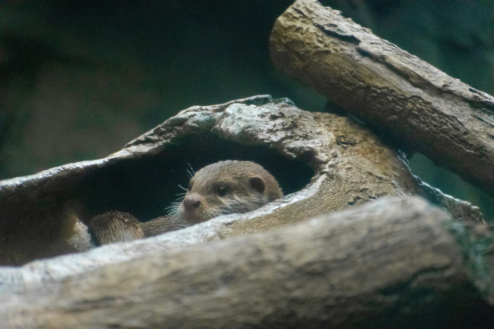
Luna cane to us in 2022 with a heart disease. She is fully cured now but pregnant (the father was released), and we plan to release her with her pups as soon as she gives birth.
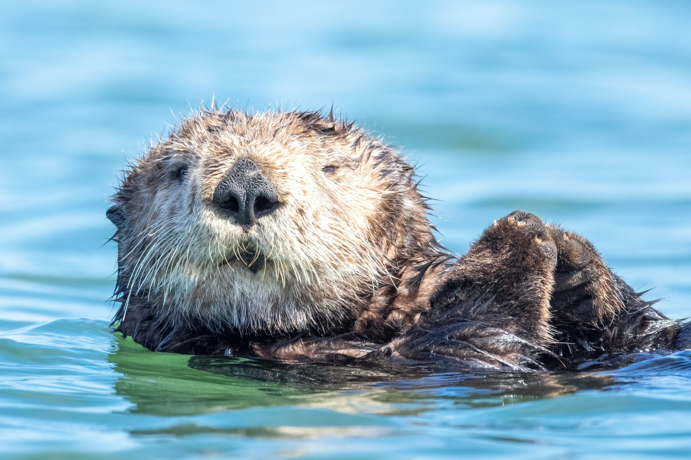
Mochi is an otter who is known for having an almost human like personality (this photo was taken after we told her she couldn't steal the other otters' fish) She was rescued with brain inflammation caused from living in polluted water. She is mostly cured and will be released in the near future.
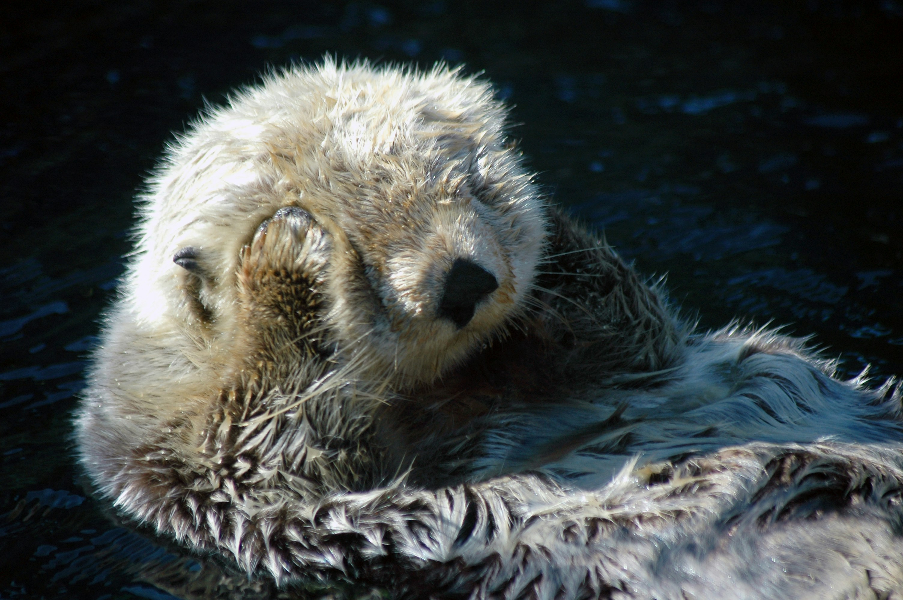
Kai was brought to us because he was blind and not adapting to it the way most sharks do. He is definetly making progress and we will release him when he is fully adapted.
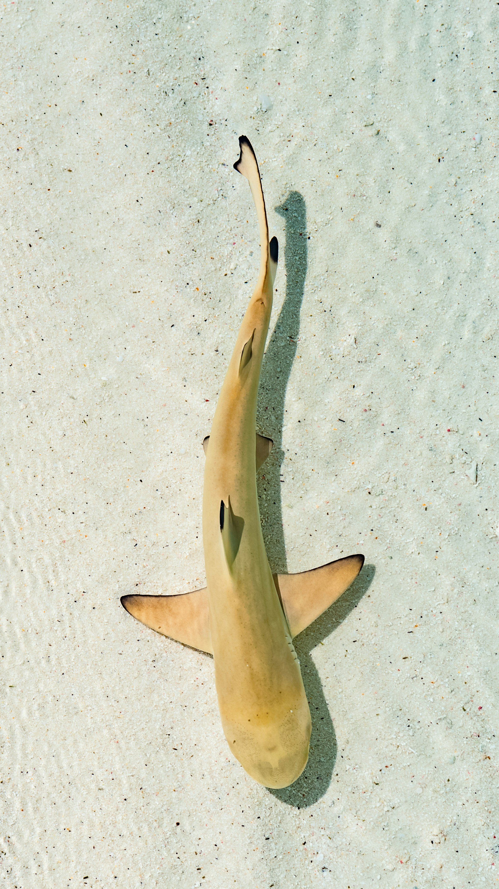
Sailor was rescued because of living alone in polluted water that gave him different diseases. He has many sicknesses and curing him will definetly be a process but we plan to return him in 3-5 years.
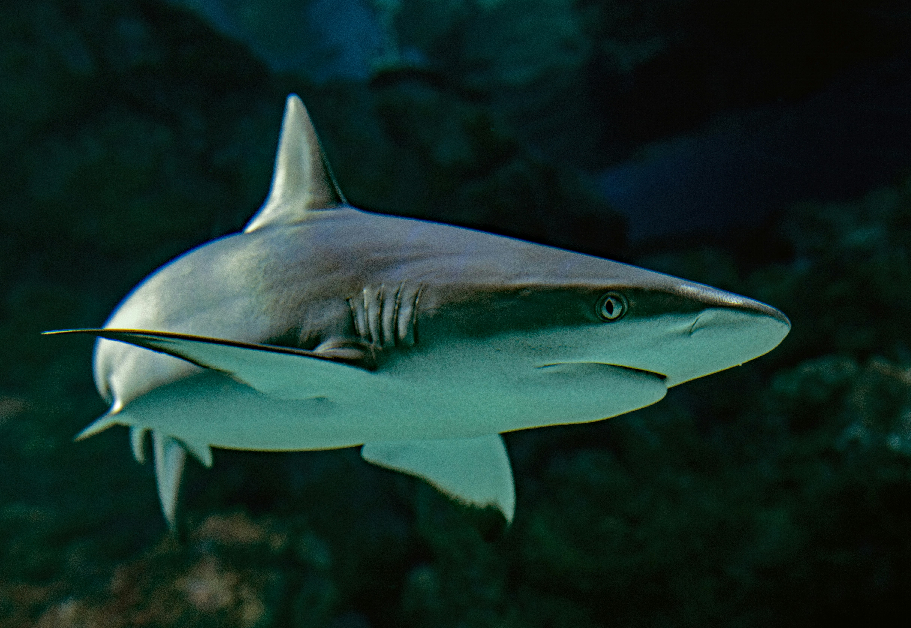
Nereid is a rescue from an aquarium, actually, where she was being severly mistreated and gave her a fear of other animals. We brought her here and we are slowly and gently repairing her mental health.
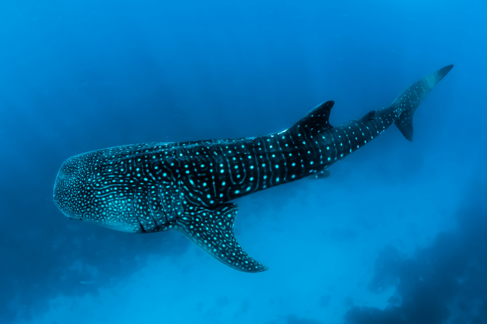